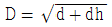
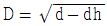
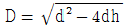
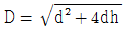

사출(프레스)금형산업기사 (2012-05-20 기출문제)
1과목: 금형설계
1. 원통 드로잉 제품의 직경을(d)라 하고, 높이를(h)라 하며, 각 반지름(r)을 고려햐지 않을 때 블랭크 직경(D)는 어떻게 계산되는가?




(정답률: 80%)

2. 프로그레시브 금형 설계 단계 중 제품도의 검토 단계에서 검토 사항이 아닌 것은?
- 작업자의 숙련기능 정도
- 제품의 재질, 두께 및 기계적 성질
- 치수릐 정밀도
- 버(Burr)의 방향 지정 유무
(정답률: 95%)
3. 순차 이송 금형에서 이미 뚫린 구멍으로 이송위치를 정확히 맞추어 주는 부품은?
- 파일럿 핀
- 맞춤 핀
- 키커 핀
- 사이드 커터
(정답률: 95%)
4. 지름이 60mm인 원통 컵을 지름이 100mm의 블랭크로 1회 드로잉할 때 드로잉률(%)은?
- 40
- 60
- 70
- 80
(정답률: 87%)
5. 일반적인 블랭킹 가공에서 거스러미(burr)는 어느 쪽에 발생하는가?
- 펀치의 진행 방향에 발생(제품의 아래쪽)
- 펀치의 진행 방향과 반대 방향에 발생(제품의 위쪽)
- 펀치의 진행 방향과 반대 방향 양쪽 모두 발생
- 발생하지 않는다.
(정답률: 65%)
6. 프레스금형에서 사용되는 가이드 포스트(guide post)에 대한 설명 중 틀린 것은?
- 가이드 포스트는 정밀하게 가공된 핀의 일종이다.
- 가이드 포스트는 다이 홀더에 정확히 억지끼워맞춤 되어야 한다.
- 가이드 포스트의 재질은 일반적으로 STC4를 사용한다.
- 가이드 포스트의 표면 경도는 HRC 30이하 이어야 한다.
(정답률: 59%)
7. 트랜스퍼금형의 프레스 작동주기(cycle) 순서를 올바르게 나타낸 것은?
- 정지 → 핑거의 인입 → 트랜스퍼 몸체의 후진 → 정지 → 핑거의 진출 → 트랜스퍼 몸체의 전진
- 정지 → 핑거의 진출 → 핑거의 인입 → 트랜스퍼 몸체의 후진 → 정지 → 트랜스퍼 몸체의 전진
- 핑거의 인입 → 정지 → 트랜스퍼 몸체의 후진 → 정지 → 핑거의 진출 → 트랜스퍼 몸체의 전진
- 핑거의 인입 → 정지 → 트랜스퍼 몸체의 전진 → 정지 → 핑거의 진출 → 트랜스퍼 몸체의 후진
(정답률: 51%)
8. 프레스금형 부품 중 파일럿 핀으 기능은?
- 제품의 수량을 정확하게 한다.
- 구멍 형상을 가공한다.
- 정확한 가공 소재의 위치를 결정한다.
- 소재를 배출한다.
(정답률: 91%)
9. 프레스 작업을 합리적으로 하기 위하여 고려해야 할 3가지 요소에 해당하지 않는 것은?
- 압력능력
- 토크능력
- 작업수량
- 작업능력
(정답률: 85%)
10. 다음 중 드로잉 과정을 순서대로 올바르게 설명한 것은?
- 블랭크를 눌러주는 과정 → 제품형성과정 → 블랭크 변형과정 → 제품추출과정
- 블랭크를 눌러주는 과정 → 블랭크 변형과정 → 제품형성과정 → 제품추출과정
- 블랭크 변형과정 → 블랭크를 눌러주는 과정 → 제품형성과정 → 제품추출과정
- 블랭크 변형과정 → 블랭크를 눌러주는 과정 → 제품추출과정 → 제품형성과정
(정답률: 71%)
11. 다음 중 2매 구성 금형의 특징을 설명한 것으로 틀린 것은?
- 게이트의 형상 및 위치를 비교적 쉽게 수정할 수 있다.
- 제품의 표면에 핀 포인트 게이트를 채용하면 게이트 절단에 일손이 필요 없다.
- 구조가 간단하고 취급이 용이하다.
- 내구성이 우수하며 성형 사이클을 빨리 할 수 있다.
(정답률: 79%)
12. 러너리스(runner less) 금형의 특징이 아닌 것은?
- 성형 사이클이 단축된다.
- 수지의 코스트가 경감된다.
- 수지의 열변형을 최소화한다.
- 금형설계, 보수가 쉽다.
(정답률: 56%)
13. 성형품에 보강 리브(Rib)를 붙였을 때의 장점 중 맞는 것은?(오류 신고가 접수된 문제입니다. 반드시 정답과 해설을 확인하시기 바랍니다.)
- 금형 제작이 쉽다.
- 내부응력이 집중된다.
- 수지의 응고를 좋게 한다.
- 성형품의 경량화를 기할 수 있다.
(정답률: 41%)
14. 사출금형에서 파팅 라인, 이젝터 핀, 슬라이드 코어의 주위 등의 틈새에 용융 수지가 흘러들어가서 제품과는 관계없는 필름 모양의 막이 생기는 결함을 무엇인가?
- 플래시
- 웰드라인
- 플로 마크
- 싱크 마크
(정답률: 65%)
15. 언더컷을 처리하기 위한 공압 실린더 작동방식의 특징이 아닌 것은?
- 작동력 및 작동 속도가 무단으로 조정될 수 있다.
- 성형기의 사이클에 관계없이 전진, 후진이 가능하다.
- 성형기에 부착시 편리하게 사용할 수 있다.
- 금형 구조가 간단하다.
(정답률: 26%)
16. 성형품 치수 150mm, 성형수축률 5/1000 일 때, 상온의 금형 치수(mm)는 약 얼마인가?
- 148.75 mm
- 149.25 mm
- 150.75 mm
- 151.25 mm
(정답률: 89%)
17. 원통형 성형품의 코어 휨을 방지하기 위한 게이트로 적합한 것은?
- 필름 게이트
- 핀 포인트 게이트
- 서브마린 게이트
- 링 게이트
(정답률: 54%)
18. 다음 중 사출성형기의 형체장치가 아닌 것은?
- 프레임(Frame)
- 금형 설치판(Mold plate)
- 타이바(Tie-bar)
- 이젝터(Ejector)
(정답률: 67%)
19. 원형 이젝터 핀의 특징이 아닌 것은?
- 가공이 용이하다.
- 임의의 위치에 배치가 가능하다.
- 작동시의 저항이 크다.
- 파손시 보수가 쉽다.
(정답률: 81%)
20. 다음 수지 중에서 성형 수축률이 가장 높은 것은?
- 폴리아세탈
- 폴리스틸렌
- 폴리카보네이트
- 메타크릴 수지
(정답률: 39%)
2과목: 기계가공법 및 안전관리
21. 연삭 숫돌의 결합제로 적당하지 않는 것은?
- 비트리파이드 결합제
- 실리케이트 결합제
- 고무 결합제
- 입도 결합제
(정답률: 50%)
22. 금형을 사용하여 제품을 생산 할 때 특징을 설명한 것으로 거리가 먼 것은?
- 생산제품의 치수정밀도가 높다.
- 다 품종 소량생산에 유리하다.
- 금형을 이용하면 숙련기술 없이도 생산이 쉽다.
- 제품의 외관이 깨끗하고 미려하다.
(정답률: 78%)
23. NC 공작기계가 일을 하려면 공구와 가공물이 서로 움직여야 하는데 움직임을 지어하는 3가지 방식에 속하지 않는 것은?
- 테이퍼절삭 제어
- 위치결정 제어
- 직선절삭 제어
- 윤곽절삭 제어
(정답률: 76%)
24. 다음 중 범용공작기계나 전용공작기계에 비하여 CNC공작기계의 장점을 설명한 것으로 틀린 것은?
- 한번 프로그램 한 것으로 대량생산이 가능하다.
- 공작물의 변경에 대하여 프로그램을 바꾸는 것이 용이하다.
- 숙련에 오랜 시간과 경험이 필요하다.
- 프로그램의 기록, 보존이 용이하다.
(정답률: 80%)
25. 높은정밀도를 요구하는 가공물, 각종지그, 정밀기계의 구멍가공 등에 사용하는 보링머신은?
- 수평 보링머신
- 지그 보링머신
- 정밀 보링머신
- 수직 보링머신
(정답률: 75%)
26. 프레스 기계작업 시작 전 점검사항으로 적절하지 않는 것은?
- 그리스(Grease) 공급
- 클러치 및 브레이크의 기능
- 전단기의 칼날 및 테이블의 상태
- 급정지 장치 및 비상정지 장치 기능
(정답률: 74%)
27. 선반에서 지름 200mm의 탄소강을 회전수 400rpm, 이송 0.5mm/rev, 길이 100mm를 2회 가공할 때 소요되는 시간은?
- 60초
- 80초
- 100초
- 120초
(정답률: 35%)
28. 가공물과 랩 사이에 미세한 불만 상태의 랩제를 넣고 가공물에 압력을 가하면서 상대운동을 시켜 표면거칠기가 우수한 가공면을 얻는 가공법은?
- 슈퍼피니싱
- 호닝
- 보링
- 래핑
(정답률: 80%)
29. 치 공구의 주 기능이 아닌 것은?
- 가공물의 위치결정
- 가공물의지지
- 가공물의 고정
- 가공물의 이송
(정답률: 75%)
30. 와이어 컷 방전가공기의 특징에 대해 설명한 것으로 틀린 것은?
- 담금질된 강이나 초경합금의 가공이 가능하다.
- 공구전극이 필요하며 전극재료는 주로 흑연을 사용한다.
- 가공 여유가 적고 전가공이 불필요하며 직접 형상을 얻을 수 있다.
- 소비 전력이 적고, 전극의 소모가 무시된다.
(정답률: 49%)
31. 제품의 정밀도 보다는 생산속도를 증가시키기 위하여 사용되는 지그는?
- 샌드위치 지그
- 템플릿 지그
- 앵클 플레이트 지그
- 육각 지그
(정답률: 76%)
32. 소재를 챔버(chamber) 안에 넣고 램(ram)으로 압력을 가하여 일정한 구멍모양의 다이(die)에 통과시켜 제품을 생산하는 소성가공법은?
- 인발가공
- 단조가공
- 압출가공
- 프레스가공
(정답률: 54%)
33. 두께 3mm, 0.1% C의 연강에 지름 20mm의 구멍으로 펀칭할 때 전단력은? (단, 판의 전단저항은 25kgf/mm2이다.)
- 1473kgf
- 3243kgf
- 2753kgf
- 4713kgf
(정답률: 47%)
34. 와이어 컷 방전가공의 와이어 전극재료로 적당하지 않는 것은?
- 구리
- 황동
- 텅스텐
- 크롬
(정답률: 62%)
35. CNC 와이어 컷 가공에 있어서 세컨드 컷 가공의 효과가 아닌 것은?
- 다이 형상에서의 돌기부분 발생
- 거친 가공면과 가공면의 연화층 제거
- 가공물의 내부응력 개방 후 형상수정
- 코너부 형상 에러 및 가공면의 진직정도 수정
(정답률: 75%)
36. 블랭킹한 제품의 전단면을 다시 한번 깎아내어 곱게 다듬질하는 가공은?
- 셰이빙
- 블랭킹
- 피어싱
- 코이닝
(정답률: 84%)
37. 선반가공에서 바이트의 경사면 위를 연속적으로 흘러나오는 유동형 칩의 발생조건이 아닌 것은?
- 경사각이 클 때
- 연성의 재료를 가공할 때
- 절삭속도가 빠를 때
- 절삭깊이가 클 때
(정답률: 62%)
38. 래핑가공의 장점을 설명한 것으로 틀린 것은?
- 정밀도가 낮은 제품을 얻을 수 있다.
- 다듬질면은 내식성 및 내마모성이 증가한다.
- 가공면이 매끈하고 거울 면을 얻을 수 있다.
- 미끄럼면이 원활하고 마찰계수가 적어진다.
(정답률: 85%)
39. 머시닝센터에서 우측 공구지름 보정을 의미하는 준비기능 코드는?
- G43
- G40
- G41
- G42
(정답률: 58%)
40. 다음 플라스틱 금형의 종류가 아닌 것은?
- 사출성형
- 압출성형
- 블로우 성형
- 냉간 단조형
(정답률: 72%)
3과목: 금형재료 및 정밀계측
41. 감도가 1눈금에 대하여 0.02mm/m의 수준기에 있어서 1눈금의 나비가 2mm인 기포관 내면의 곡률 반지름은 약 몇 m 인가?
- 41.3
- 82.5
- 103
- 206
(정답률: 41%)
42. 일반적인 나사의 유효지름 측정법이 아닌 것은?
- 삼침법에 의한 측정
- 나사 마이크로미터에 의한 측정
- 브레이드 마이크로미터에 의한 측정
- 공구현미경에 의한 측정
(정답률: 60%)
43. 감도(感度)를 올바르게 나타낸 식은?
- 감도 = 측정량의 변화 / 참값
- 감도 = 지시량의 변화 / 참값
- 감도 = 지시량의 변화 / 측정량의 변화
- 감도 = 측정량의 변화 / 지시량의 변화
(정답률: 66%)
44. 표면거칠기의 측정에서 촉침식 측정기의 측정시 주의사항으로 잘못된 것은?
- 측정방향은 반드시 가공방향과 기능을 고려해서 해야 한다.
- pick up이 측정면에 대해서 수직으로 움직이도록 설치해야 한다.
- 측정 도중 사고를 방지하기 위해 픽업을 고정해야 한다.
- 고정밀 측정이므로 절대 진동이 없는 장소에서 측정해야 한다.
(정답률: 58%)
45. 특정 부품의 특별한 치수를 검사하기 위하여 설계된 한계게이지로 많은 연속작업, 또는 대량 생산으로 제작된 공작물을 검사하는데 적합한 것은?
- 플러그 게이지
- 스냅 게이지
- 플러시 핀 게이지
- 테보 게이지
(정답률: 37%)
46. 다음 측정값 중에 오차율이 가장 큰 것은?
- 참 값이 30mm의 외경을 측정한 결과 29.99mm 이었다.
- 참 값이 50mm의 외경을 측정한 결과 50.02mm 이었다.
- 참 값이 70mm의 외경을 측정한 결과 69.98mm 이었다.
- 참 값이 90mm의 외경을 척정한 결과 90.03mm 이었다.
(정답률: 51%)
47. 공기 마이크로미터의 장점에 해당하지 않는 것은?
- 내경 측정이 쉽다.
- 측정력이 거의 0에 가까워 정확한 측정이 가능하다.
- 배율 및 정도가 높다.
- 측정범위가 넓다.
(정답률: 35%)
48. 측정조건을 바꾸어도 실제 길이와 측정값 사이의 차를 발생시키는 측정기 자체에 의한 오차는?
- 기차
- 개인오차
- 환경오차
- 우연오차
(정답률: 69%)
49. 외측 마이크로미터(75~100mm)의 앤빌과 스핀들의 평행도 검사를 하고자 할 때 필요하지 않은 것은?
- 옵티컬 패러렐
- 게이지 블록
- 옵티컬 플랫
- 단색광원장치
(정답률: 34%)
50. 버니어 캘리퍼스의 어미자의 눈금이 1mm이고 어미자의 눈금 19mm를 20등분한 것의 최소 측정값은 몇 mm 인가?
- 0.01
- 0.02
- 0.⑤
- 0.10
(정답률: 69%)
51. 강을 여리게 하고 산이나 알칼리에 약하게 하며 백점이나 헤어크랙을 일으키는 주 원소는?
- 수소
- 탄소
- 질소
- 황
(정답률: 53%)
52. 철-탄소상태에는 3개의 불변점(invariant point)이 있다. 다음 중 해당되지 않는 것은?
- 공정점
- 공석점
- 포정점
- 포석점
(정답률: 61%)
53. 강의 취성을 적열취성의 원인이 되는 원소는?
- Mn
- Si
- S
- P
(정답률: 61%)
54. 아공석강에서 탄소강의 탄소함유량이 증가할 때 기계적 성질을 설명한 것으로 틀린 것은?
- 인장강도가 증가한다.
- 강도가 증가한다.
- 항복점이 증가한다.
- 연신율이 증가한다.
(정답률: 55%)
55. 다음 중 금속의 물리적인 성질로만 짝지어진 것은?
- 인장성, 내식성
- 주조성, 용점성
- 비중, 비열
- 강도, 경도
(정답률: 65%)
56. 다음 중 비중이 가장 낮으며 주로 항공기 부품으로 많이 사용되는 합금은?
- Su 합급
- Mg 합금
- Ti 합금
- Cu 합금
(정답률: 65%)
57. 다음 중 주조한 상태로 담금질하지 않아도 경도, 내마모성, 고온저항이 큰 주조경질 합금은?
- 비디아
- 스텔라이트
- 탕갈로이
- 카블로이
(정답률: 62%)
58. 다음 중 고속도강의 기호는?
- SPs
- SKH
- STC
- STS
(정답률: 69%)
59. 금형재료가 반드시 가져야 하는 특성이 아닌 것은?
- 내마모성이 클 것
- 열처리시 변형이 클 것
- 기계 가공성이 양호할 것
- 인성이 클 것
(정답률: 70%)
60. 열가소성 플라스틱에 속하는 것은?
- 폴리에틸렌
- 페놀 수지
- 요소 수지
- 멜라민 수지
(정답률: 72%)
D = C/π = 2πd/π = 2d
즉, 블랭크 직경(D)는 원통의 직경(d)의 2배가 된다. 따라서 정답은 ""이다.